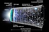

physics
domain

Source: Wikipedia
Wikipedia Page (Something wrong with this association? Let us know.)
Wikidata Page (Something wrong with this association? Let us know.)
Occurs in:
- physics__atomic_mass_constant
- physics__avogadro_constant
- physics__bohr_radius_constant
- physics__boltzmann_constant
- physics__cosmological_constant
- physics__coulomb_constant
- physics__elementary-electric-charge_constant
- physics__fine-structure_constant
- physics__first_radiation_constant
- physics__gravitational-coupling_constant
- physics__hartree_energy_constant
- physics__ideal_gas_constant
- physics__planck_electric-charge_constant
- physics__planck_constant
- physics__planck_length_constant
- physics__planck_mass_constant
- physics__planck_temperature_constant
- physics__planck_time_constant
- physics__reduced_planck_constant
- physics__rydberg_constant
- physics__second_radiation_constant
- physics__stefan-boltzmann_constant
- physics__universal_gravitation_constant
- physics_vacuum__permittivity_constant
- physics_vacuum__electrical_impedance_constant
- physics_vacuum_light__speed_constant
- physics_vacuum__magnetic_permeability_constant
- physics__von-karman_constant